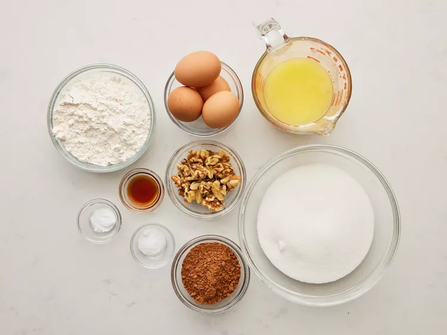
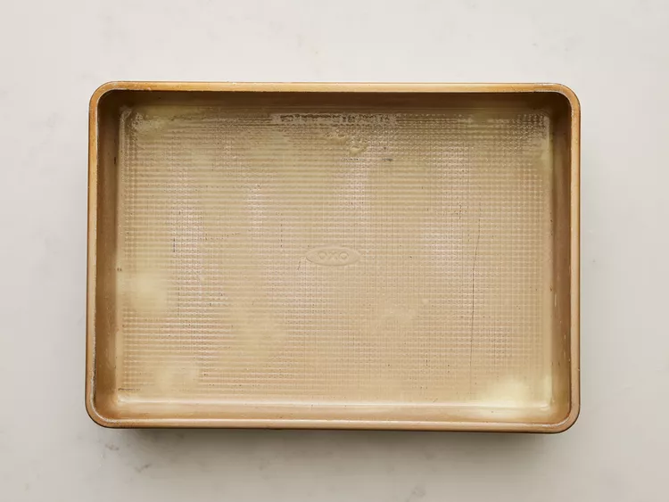
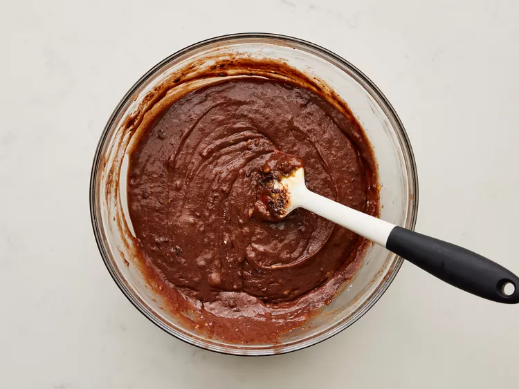
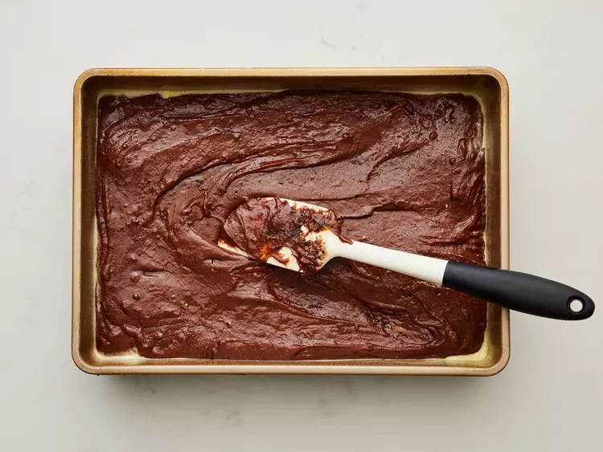
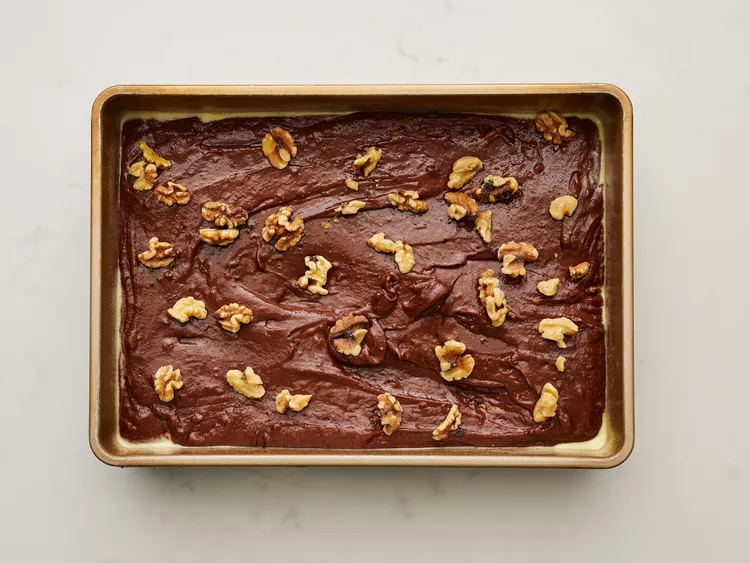
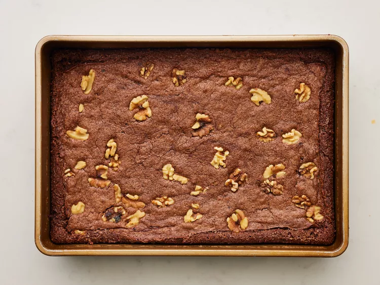

This easy brownie recipe takes about 30 minutes to make
from start to finish for a chocolaty treat.
Bake these easy
brownies whenever you need to quickly satisfy your sweet tooth. Made
with kitchen staples, you'll come back to this easy brownie recipe again
and again.
Ingredients
- 2 cups of white sugar
- 1 1/2 cups of all-puropse flour
- 1 cup of melted butter
- 4 eggs
- 1/2 cup of cocoa powder
- 1/2 teaspoon of baking powder
- 1/2 teaspoon of salt
- 1/2 cup of walnut halves
Preparation
- Gather all ingredients. 
- Preheat the oven to 350 degrees F (175 degrees C). Grease a 9x13-inch pan. 
- Mix sugar, flour, melted butter, eggs, cocoa powder, vanilla, baking powder, and salt in a large bowl until combined. 
- Spread the batter into the prepared pan. 
- Decorate with walnut halves. 
- Bake in the preheated oven until top is dry and edges have started to pull away from the sides of the pan, about 20 to 30 minutes. 
- Cool before slicing into squares. Enjoy!

Original recipe: Quick And Easy Brownies by C. Nelson -09.18.2024